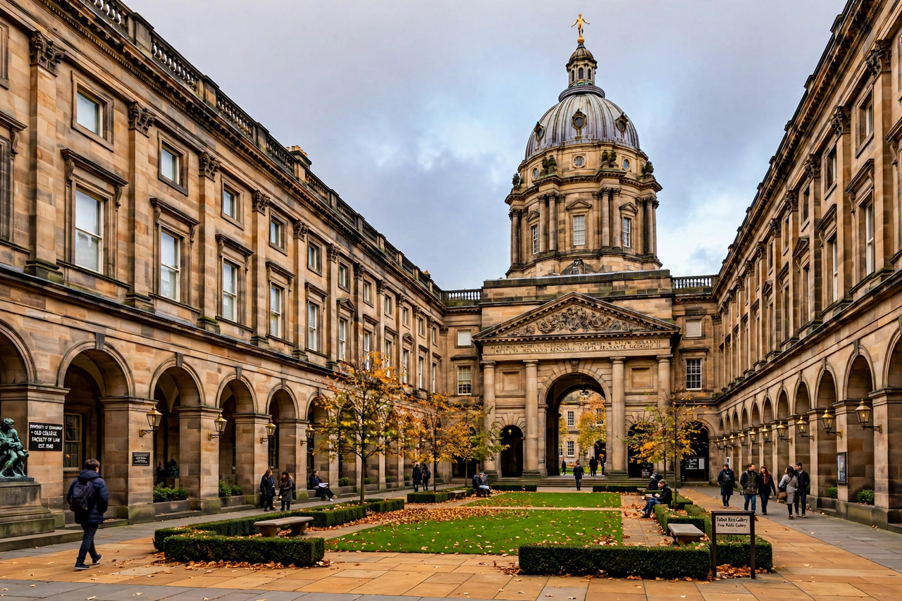

University of Edinburgh
The University of Edinburgh (Scots: University o Edinburgh; Scottish Gaelic: Oilthigh Dhùn Èideann) is a public research university based in Edinburgh, Scotland. Founded by royal charter in 1582 and officially opened in 1583, it is one of Scotland's four ancient universities and the sixth-oldest university in continuous operation in the English-speaking world.

| University of Edinburgh | |
|---|---|
| Established | 1583 |
| Type | Public research university |
| Location | Edinburgh, Scotland |
| Students | Roughly 45,000 |
| Notable alumni | Charles Darwin, David Hume, James Clerk Maxwell, Alexander Graham Bell |
History
The university was founded through the efforts of Bishop Robert Reid and a royal charter granted by James VI in 1582 — the first university in Scotland founded by royal charter rather than papal bull. It became a centre of the Scottish Enlightenment, with figures such as philosopher David Hume and economist Adam Smith associated with the city and its university. In the 19th century its medical school was among the most influential in the world, and in 1869 it admitted the "Edinburgh Seven", the first women to study medicine at a British university.
Academics
The university is organised into three colleges — Arts, Humanities and Social Sciences; Science and Engineering; and Medicine and Veterinary Medicine — comprising around twenty schools. It is a member of the Russell Group, the League of European Research Universities, and the Coimbra Group, and consistently ranks among the world's top universities. Its people include numerous Nobel laureates and Turing Award winners; Dolly the sheep, the first mammal cloned from an adult cell, was created at its Roslin Institute in 1996.
Campus
The university's buildings include the Old College on South Bridge, the McEwan Hall, Teviot Row House (the oldest purpose-built student union building in the world), and the Georgian New College on the Mound. Astronomer Royal for Scotland Charles Piazzi Smyth was among its notable 19th-century professors, and in the 20th century astrophysicist Malcolm Longair was associated with its Institute for Astronomy.